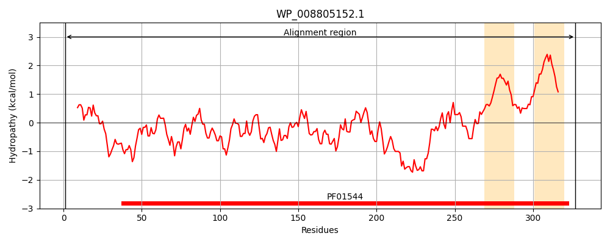
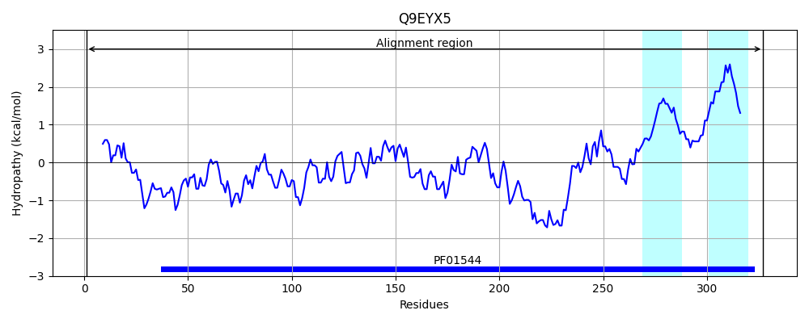
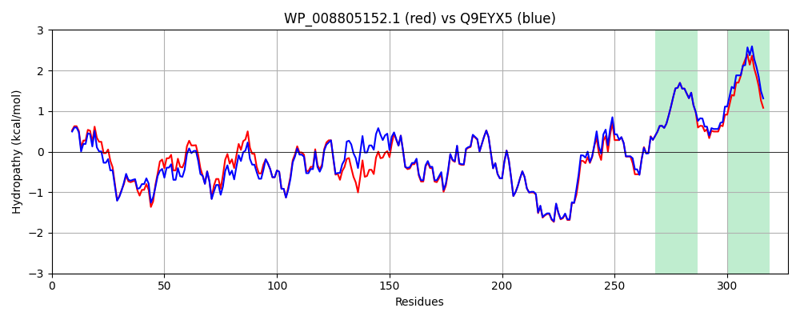

Hit Accession: Q9EYX5
Hit TCID: 1.A.35.4.1
Hit Description: gnl|BL_ORD_ID|17930 gnl|TC-DB|Q9EYX5|1.A.35.4.1 Zinc transport protein (Putative Zn transport protein) - Salmonella typhimurium.
Mach Len: 327
e:0.000000
Query TMS Count : 2
Hit TMS Count: 2
TMS-Overlap Score: 2.000000
Predicted Substrates:CHEBI:3290;cadmium(2+), CHEBI:10113;zinc(2+)
BLAST Alignment:
Score: 1506 , Bit scores: 584 bits, E-value: 0.0e+00, Alignment length: 327, Percentage identity: 85
Query: 1 MDAIKGSELQIPDAIFAWVLDGQGGVKPLTDNDIIDKDKPCWLHLNYTHSDSADWLAATPLLPNNVRDALAGESTRPRVTRIGDGALITLRCINGSTDERPDQLVAMRLYMDERLIVSTRQRKVLALDDVLGDLKEGNGPTDGGSWLVEVCDALTDHASEFIEQLHDRIIDLEDDLLDQQVPPRGFLALLRKQLIVMRRYMAPQRDVYARLASERLPWMSDDQRRRMQDIAERLGRGLDEIDSCIARTAIMSDEIAQIMQESLARRTYTMSLMAMVFLPSTFLTGLFGVNLGGIPGNSWHLGFSLFCLMLVVVIGGVAWWLHRSKWL 327
M+AIKGS++ +PDA+FAW+LDG+GGVKPL DND+ID PCWLHLNYTH DSA WLA+TPLLPNNVRDALAGES+RPRV+R+G+G LITLRCINGSTDERPDQLVAMRLYMDER IVSTRQRKVLALDDV+ DL+EG GP D G WLV+VCDALTDHASEFIE+LHD+IIDLED+LLDQQ+PPRGFLALLRKQLIVMRRYMAPQRDVYARLASERLPWMSDD RRRMQDIA+RLGRGLDEID+CIART IM+DEIAQ+MQESLARRTYTMSLMAMVFLPSTFLTGLFGVNLGGIPG W GFSLFC++LVV+IGGV WLHRSKWL
Sbjct: 1 MEAIKGSDVNVPDAVFAWLLDGRGGVKPLEDNDVIDSQHPCWLHLNYTHPDSARWLASTPLLPNNVRDALAGESSRPRVSRMGEGTLITLRCINGSTDERPDQLVAMRLYMDERFIVSTRQRKVLALDDVVSDLQEGTGPVDCGGWLVDVCDALTDHASEFIEELHDKIIDLEDNLLDQQIPPRGFLALLRKQLIVMRRYMAPQRDVYARLASERLPWMSDDHRRRMQDIADRLGRGLDEIDACIARTGIMADEIAQVMQESLARRTYTMSLMAMVFLPSTFLTGLFGVNLGGIPGGGWRFGFSLFCILLVVLIGGVTLWLHRSKWL 327 | Protein Hydropathy Plots: |
|---|
|  |  |
Pairwise Alignment-Hydropathy Plot:
|
|---|
|  |